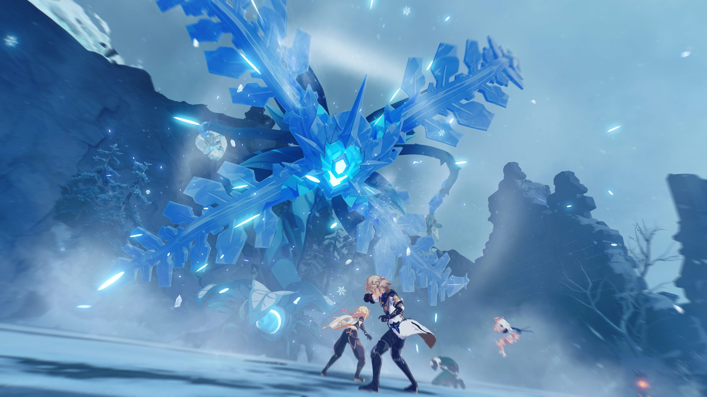
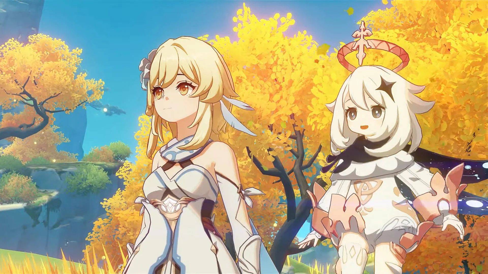

Summoner Wars
Một trò chơi chiến thuật trực tuyến nhiều người theo lượt trên di động được phát triển bởi Com2uS.

Giới thiệu
Summoners war lấy cốt truyện từ thế giới cổ của hàng ngàn năm trước, nơi có những nhóm người tự mệnh danh mình là Summoner, cuộc sống của họ quay vòng từ việc tìm kiếm các loại quái thú khác nhau và huấn luyện nó cho chiến tranh. Cuộc chiến tranh này kéo dài từ năm này qua năm khác, cuối cùng, vì muốn chấm dứt tình trạng này, đấu trường Celestial đã được thành lập với mục đích giữ cho các cuộc chiến tranh nằm trong vùng dễ kiểm soát, mọi người có thể đấu với nhau một cách công khai để khẳng định chủ quyền về tài sản.
 Mỗi nhân vật đều có hai loại kỹ năng: kỹ năng thông thường và kỹ năng đặc biệt, kỹ năng thông thường thì chỉ cần "thời gian làm nguội của chiêu thức" kết thúc thì người chơi có thể phát động, còn kỹ năng đặc biệt thì cần phải tích lũy năng lượng nguyên tố thì mới có thể thi triển.
Khi bước vào thế giới trong game, bạn sẽ được nhập vai vào một Summoner vô danh, đang chuẩn bị con đường tranh đấu của mình theo lệnh của một pháp sư hùng mạnh trong hội đồng có tên là Durand. Bạn sẽ có một người trợ lý đi cùng tên là Ellia sẽ đi theo bạn trong suốt trò chơi. Trong hành trình của mình bạn có thể tham gia làm các nhiệm vụ để tìm ra nguyên nhân vì sao thế giới đang ngày càng hỗn loạn và chiến đấu chống lại các thế lực đen tối đang âm mưu chiếm đoạt nguồn sức mạnh vô song.
Lối chơi
Người chơi đảm nhận vai trò là một nhà hiệu triệu, tiến hành mở các giấy hiệu triệu thu về các quái vật để chiến đấu cho mình. Quái vật khi được hiệu triệu có thể thu được ngẫu nhiên từ 1 sao đến 5 sao. Sử dụng quái vật trong các trận chiến làm tăng cấp độ của chúng, và chúng có thể được nâng cấp lên cấp sao cao hơn, tối đa là 6 sao. Mọi quái vật được triệu hồi sẽ thuộc 1 trong 5 yếu tố: nước, lửa, gió, ánh sáng và bóng tối. Ngoài ra, mỗi quái vật cũng sẽ thuộc một lớp cụ thể: hỗ trợ, phòng thủ, máu và tấn công. Ngoài việc nâng lên cấp sao cao hơn, có một cơ chế khác trong trò chơi là thức tỉnh. Thức tỉnh một quái vật sẽ làm thay đổi ngoại hình và tên của nó, đồng thời gia tăng chỉ số cơ bản và có thể cho phép nó có được một kỹ năng mới.

Cơ chế cốt lõi của trò chơi là việc tìm kiếm và sử dụng ấn thạch. Mỗi quái vật có 6 vị trí chứa ấn thạch, giúp gia tăng chỉ số cơ bản của nó. Không chỉ vậy, các ấn thạch còn được phân loại thành nhiều bộ, nếu một bộ ấn thạch được tập hợp đầy đủ, quái vật sẽ được nhận thêm sức mạnh đặc trưng của bộ ấn thạch đó.
Bạn có thể tham khảo thêm thông tin tại đây
Tải game
Hiện có thể tải game qua các nền tảng: Android và iOS.
Thông tin thêm
| Nhà phát triển | Com2uS. |
| Nhà phát hành | Com2uS. |
| Công Nghệ | Unity. |
| Nền tảng | Android, iOS. |
| Chế độ | Nhiều người chơi. |
| Thể loại | Chiến lược. |